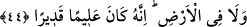

44. Bunlar yeryüzünde gezip de kendilerinden öncekilerin sonunun nasıl olduğunu
görmediler mi? Halbuki onlar, bunlardan daha güçlü idiler. Ne göklerde ne de yerde
Allah’ı âciz bırakacak bir güç vardır. O, bilendir, güçlüdür.
“Bunlar” yâni Mekke müşrikleri “yeryüzünde” ticâret için “gezip de” Şam, Yemen
ve Irak diyarına gidip “kendilerinden öncekilerin” yâni geçmiş âsî ümmetlerin
ülkelerindeki eserleri müşâhede ederek onların “sonunun nasıl olduğunu görmediler
mi? Onlar peygamberleri tekzîb edince helâk oldular, helâk eserleri ise ülkelerinde hâlâ
mevcuddur.
“Halbuki onlar,” Âd, Semûd ve Sebe’ halkı “bunlardan daha güçlü idiler. Ne
göklerde ne de yerde Allah’ı âciz bırakacak bir güç vardır. O,” yâni Allah, âlemde
olan ve olacak olan her şeyi çok iyi “bilendir, güçlüdür.” Mümkün olan her şeye
kudreti sonsuzdur.
Mânâ şöyledir: Her yönden Allah’ı âciz bırakıp azâbı savmaları muhâldir. İşte bundan
dolayıdır ki Allah Teâlâ onların bütün kötü amellerini bilmiş ve gerektiği şekilde onları
cezalandırmıştır. Madem ki bunların amelleri de onların amelleri gibidir; öyleyse
onlardan öncekileri cezalandırmaya kâdir olan Allah, bunları da cezâlandırmaya
kâdirdir. Âyet özellikle Mekkelilerin ve tüm insanların ibret alması için bir vaaz ve
öğüt niteliğindedir.
Kuş bir başka kuşu tuzakta görünce
Yeme doğru gitmez.
Başkaları senden öğüt almadan,
Başkalarının başına gelen musibetlerden sen öğüt al.
Şuna işâret edilmektedir ki Allah Teâlâ’nın hiçbir veli kulu zarar ve hüsrana
uğramamış; hiçbir Allah düşmanı da kârlı ve kazançlı çıkmamıştır. Allah Teâlâ dostları
için lütuf ve ihsan dâiresini gayet geniş tutmuş, düşmanlarını da tamamen târumâr
etmiştir. Allah’ın lütuf, ihsan ve dostluğuna sebep tevhîd inancıdır. Aynı şekilde kahır
ve düşmanlığa sebep de şirktir.
Bazı büyükler der ki Allah Teâlâ cezalandırıp helâk ettiği ümmet ve milletleri hep
günün sonunda yakalayıp cezalandırmış ve helâk etmiştir. Bu durum, genellikle cinsî
birlikteliğe muktedir olamayan kimseye benzer. Çünkü tabiattaki mûtad tesir-i ilâhînin
sebepleri, bu kişi üzerine gelmiş ancak bu kişiye etkili olamamıştır. Bu durum, kişideki
illet ve hastalığın (iktidarsızlığın) müzmin (kronik) bir hâle geldiğini gösterir. Artık bu
illet, zâil olmayacaktır. Nikah ve evliliğin fayda ve semeresi olan lezzet elde etme ve
üreme olmayınca da eşler arası tefrik edilir ve ayrılırlar. Çünkü nikah ve evlilik, bu
lezzet yahut üreme için yahut her ikisi için kurulmuş ve tesis edilmiş bir kurumdur. Yahut
bu kurum bir grup için bu lezzet gerekçesiyle, diğer bir grup için üreme gerekçesiyle,